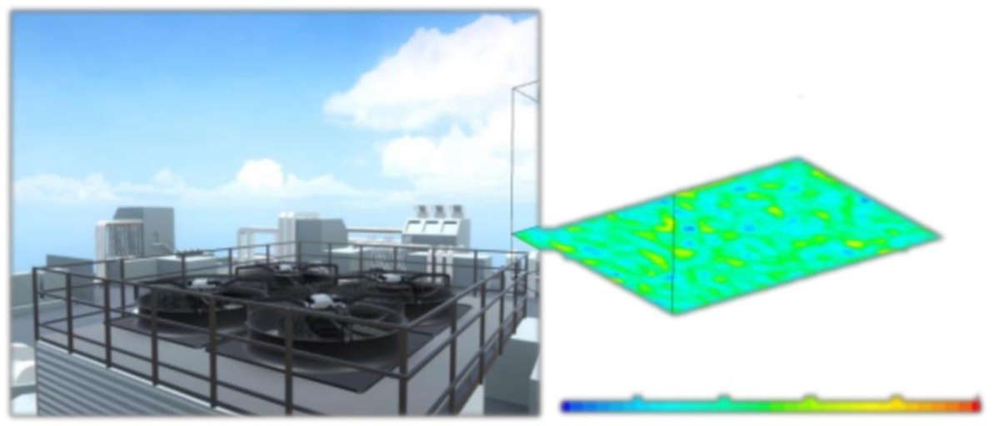

算力增长带来的能耗课题
2026年11月发布的《实施全面节约战略行动方案》提出，推进算力、通信基站和机房等基础设施节能降碳改造，优化用能结构；到2030年，规模以上工业单位增加值能耗比2025年降低10%以上，通过重点行业节能降碳改造实现节能量1.5亿吨标准煤以上。
随着算力设施规模持续扩大，冷却、供配电与智能化运维等节能技术的成熟度也在提升。对机房与建筑中央空调系统而言，输配设备往往占据相当比例的用电，是改造中优先被关注的环节。

从风机、冷却塔到智能控制
空调末端风机是常见切入点。一体式直联风机集成定制变频器、高效永磁同步电机与双曲面机翼型风叶，组合式空调器末端静压效率可由传统皮带风机的约40%提升至68%。冷却塔风机采用一体式直联EC风机后，效率可由传统29%提升至54%。
除设备替换外，变频调速、实时功率监控与485通讯让系统能够按实际负荷调节；接入能源管理系统后，机房与空调系统的用电可以分项计量、持续跟踪。
改造按五步推进
流程依次为调研、测试、方案、实施与核正。调研了解系统构成与用能结构；测试实测能耗、效率与运行参数；方案按工况形成技改方案；实施组织施工、安装与调试；核正则对比数据核算节能率，并在后续运维中持续跟踪效果。

效益怎么核算
深圳某半导体有限公司实施节能风机技改后，风机节能率平均39.3%，整体运行成本降低25%以上，19个月收回投资成本。需要说明的是，回收周期随机组数量、年运行小时数与电价而不同，机房项目需按自身工况重新测算。
更多技术细节见节能风机技改与能源管理系统；项目数据可查看项目案例。服务电话0769-22996692，欢迎交流用能现状与改造需求。